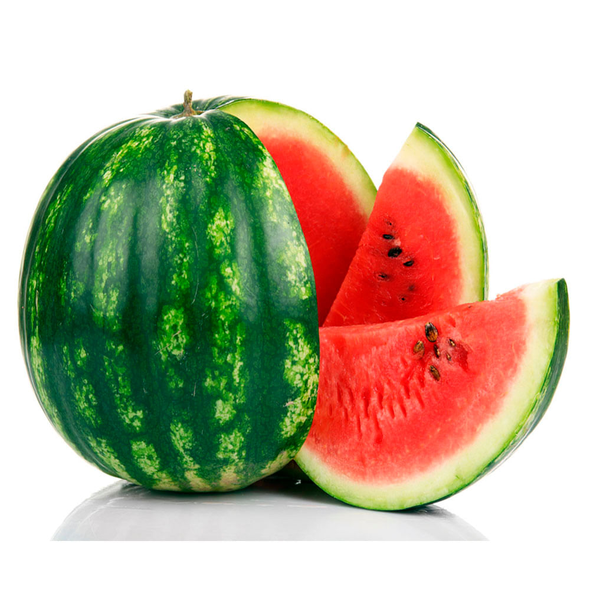

Quitanda Frutas Laranja Pêra  Há vários tipos de frutas, desde citricas até frutas secas. Verduras Alface Agrião As verduras são as plantas e folhas comestíveis. Legumes Cebola Mandioca Legumes são ricos em alimentos